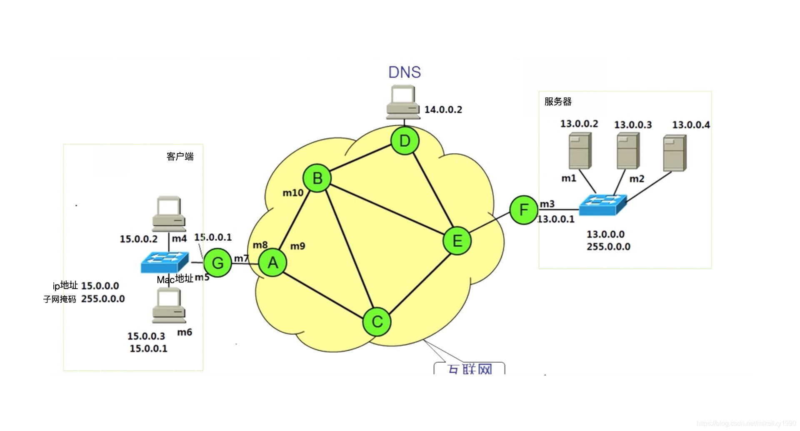
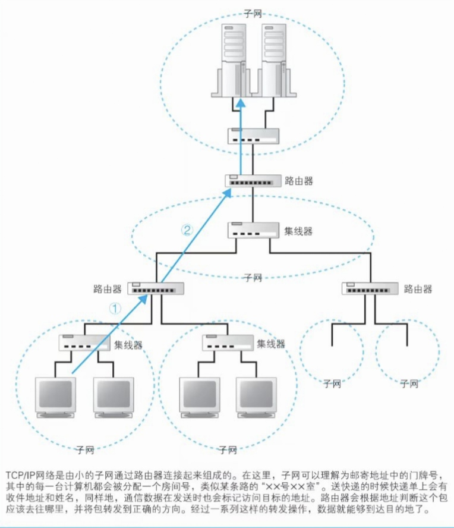
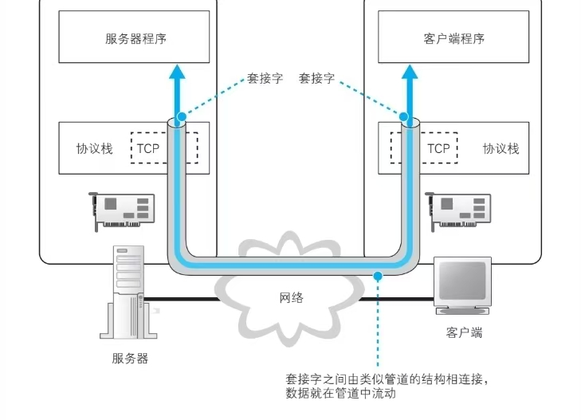
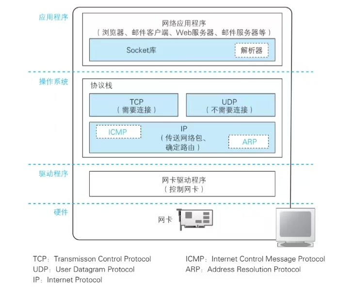

一.网络协议
在网络中，协议是一套用于格式化和处理数据的规则。网络协议就像计算机的一种共同语言。一个网络中的计算机可能会使用截然不同的软件和硬件，然而，协议的使用使它们能够相互通信。
标准化协议就像计算机可以使用的共同语言，类似于来自世界不同地区的两个人可能不理解对方的母语，但他们可以使用共同的第三语言进行交流。如果一台计算机使用互联网协议 (IP)，而第二台计算机也使用该协议，它们将能够进行通信——就像联合国依靠其 6 种官方语言在全球各地的代表之间进行交流一样。但是，如果一台电脑使用 IP，而另一台电脑不知道该协议，则它们将无法通信。
在互联网上，不同类型的进程有不同的协议。协议通常与进程在 OSI 模型中所属的层相关。
二.OSI协议

OSI将计算机网络体系结构划分为以下七层：
第七层：应用层
应用层（Application Layer）提供为应用软件而设的接口，以设置与另一应用软件之间的通信。例如: HTTP，HTTPS，FTP，TELNET，SSH，SMTP，POP3.HTML.等。
第六层：表达层
表达层（Presentation Layer）把数据转换为能与接收者的系统格式兼容并适合传输的格式。
第五层：会话层
会话层（Session Layer）负责在数据传输中设置和维护电脑网络中两台电脑之间的通信连接。
第四层：传输层
传输层（Transport Layer）把传输表头（TH）加至数据以形成数据包。传输表头包含了所使用的协议等发送信息。例如:传输控制协议（TCP）等。
第三层：网络层
网络层（Network Layer）决定数据的路径选择和转寄，将网络表头（NH）加至数据包，以形成报文。网络表头包含了网络数据。例如:互联网协议（IP）等。
第二层：数据链路层：
数据链路层（Data Link Layer）负责网络寻址、错误侦测和改错。当表头和表尾被加至数据包时，会形成信息框（Data Frame）。数据链表头（DLH）是包含了物理地址和错误侦测及改错的方法。数据链表尾（DLT）是一串指示数据包末端的字符串。例如以太网、无线局域网（Wi-Fi）和通用分组无线服务（GPRS）等。
分为两个子层：逻辑链路控制（logical link control，LLC）子层和介质访问控制（Media access control，MAC）子层。
第一层：物理层
物理层（Physical Layer）在局部局域网上传送数据帧（Data Frame），它负责管理电脑通信设备和网络媒体之间的互通。包括了针脚、电压、线缆规范、集线器、中继器、网卡、主机接口卡等。
以上这些协议看着很抽象，其实如果结合网络连接与传输相关的原理来看就比较合理了。
为什么计算机之间可以相互连接并发送数据呢？计算机是如何访问网站的呢？要仔细地探究上面的问题，理清这个过程中的每一个步骤，就可以理解计算机网络的知识了。
计算机网络的总体概述
计算机通过浏览器访问web服务器的交互过程概括起来其实十分简单：
浏览器向web服务器发送请求web服务器根据请求向浏览器发送响应
但其实信息的传输过程其实十分复杂，信息分割而成的 ”包“(Packet) 通过浏览器，经过计算机协议栈和网卡的处理，经由路由器、交换机和宽带线路的传输进入互联网，通过了web服务器的防火墙和缓存，最终进入了web服务器。
而计算机网络的这几层协议，就是按照这个过程来划分的，越靠近客户端的协议层越虚拟，也越复杂，学习计算机网络就是一个按照这个信息传输的过程来学习的过程。
浏览器的请求 （应用层）
客户端向服务器传输数据首先要发送请求，这就是HTTP，HTTPS，FTP等等这些协议的工作了，这些就是浏览器的网址，也就是URL前面的那些开头："http://" "ftp://" "file://" "mailto://" 等。
关于域名、服务器文件目录和路径相关的在此不加赘述，重点是HTTP协议是什么
HTTP主要规定了客户端与服务器之间交互的消息内容和步骤，主要是”对什么“和”进行怎样的操作“两个部分。”对什么“部分主要写的是服务器的哪个目录或文件（例如/dir1/file1.html）这一部分被称为URI，也可以什么都没有，直接是服务器的主目录，”进行怎样的操作“指的是方法，就是像GET和POST这些。除了这些还有的就是附加信息了，就是一些请求头，比如从什么浏览器发送的请求，从哪个域名访问的，cookie，日期什么的。
发送请求请求之后会收到响应信息，有状态码和响应内容什么的，这是服务器的工作，这里不是重点。
DNS服务器查询IP地址
浏览器发送请求给服务器时大多数情况是用的域名，而从域名到服务器IP地址之间转化还需要DNS服务器查询这个步骤，首先需要了解一下IP地址的基本知识。
关于IP地址
要了解IP地址是怎么构成的首先要了解TCP/IP结构，以下是一个示意图：

计算机之间用集线器连接起来的可以看作应该单位，成为子网 ，子网通过路由器连接起来的就是局域网。IP地址前面“号对应网络号，后面”室“对应主机号，共同组成的就是IP地址。DNS服务器查询过程
计算机向DNS服务器发送请求也是一个信息传输的过程，因此计算机上也有相应的DNS客户端，也就是DNS解析器，是计算机操作系统的Socket库中的一段程序，具体过程是程序运行到调用解析器这个步骤时会暂停运行，gethostbyname(“xxx.com”)会调用Socket库里的gethostbyname()向DNS服务器发送查询请求的功能，之后进入操作系统内部的协议栈通过发送UDP消息执行发送操作，在通过网卡传输到DNS服务器，之后将响应结果通过网卡传输到协议栈接受UDP消息，之后在通过Socket库的gethostname()接受响应并返回应用程序。
DNS服务器的工作原理也不是简单的将域名和IP地址一一对应并储存起来，而是通过不同层级的域名来查询的，域名越靠后的部分层级越高，具体原理和细节在此不作过多赘述。
协议栈发送消息
在得知服务器的ip地址后，下一步就是向访问的服务器发送信息了。

TCP协议交换数据的过程如图所示，数据通道的入口和出口都需要创建一个套接字 ，这是建立数据通道的前提。收发数据的过程可以总结成以下四步：- 创建套接字
- 将管道链接到服务器的套接字上
- 收发数据
- 断开管道并删除套接字 以上步骤都是又操作系统里的协议栈来完成的，和应用程序里没有关系，应用程序只是委托操作系统完成上述过程的。
创建套接字阶段
客户端创建套接字只需调用Socket 库中的socket组件。创建后会返回一个套接字的描述符，作用是识别不同的套接字，因为一台计算机同时可能对多个服务器创建不同的套接字。
连接管道阶段
这个过程是应有程序通过调用Socket库中名为connect的程序来实现的。在这个过程中需要指定三个参数：
- 描述符，来让协议栈判断到底使用哪一个套接字来与服务器的套接字进行连接
- 服务器IP地址，作用见前文
- 端口号，与IP地址一起明确具体套接字
传递信息阶段
计算机的应用程序通过调用Socket 库中的write来通过协议栈将数据传输到服务器；返回响应消息时通过调用read委托协议栈接收信息。
断开阶段
通过调用Socket库中的close程序组件进入断开阶段。 这个阶段中HTTP协议规定，web服务器发送完响应信息后需要主动断开连接。因此服务器先调用close，客户端在调用read接收到数据操作后，会告知浏览器连接已断开，客户端再调用close。
电信号传输TCP/IP数据 （传输层）
套接字
协议栈内部结构
协议栈内部分为几个部分，由上层自下层逐层委派工作。

协议栈上半部分分为TCP协议收发数据和由UDP协议收发数据的部分，像浏览器、邮件等一般的应用程序用TCP收发数据，DNS 解析器等收发较短的控制数据由UDP负责。 下半部分是IP协议控制网络包收发数据，负责将数据切分成的网络包发送给通讯对象。IP中还包括ICMP和ARP协议，ICMP用于告知网络包传输时的错误和各种控制信息，ARP用于根据IP地址查询相应的以太网MAC地址。 IP下面是网卡驱动程序负责控制网卡硬件，最下面的网卡负责完成实际的收发操作。套接字是什么
前文中讲过套接字是服务器与客户端间数据通道的出入口，那么套接字具体是什么呢？ 协议栈内部有存放控制信息的内存空间，记录了用于通信的控制信息，例如通信对象的IP地址、端口号、响应状态等等。套接字只是一个概念，并没有实体，或者说存放控制信息的内存空间就是套接字的实体。 windows的netstat可以显示套接字内容 套接字会显示PID来区分不同的通信对象
调用socket的操作
接下来讲的是浏览器调用Socket库时协议栈内部是如何工作的。 首先，是创建套接字。协议栈会先为套接字分配一个存放的内存空间，并写入初始状态的控制信息。接下来将这个套接字的描述告知应用程序，应用程序收到描述符后，想协议栈发送委托就需要提供这个描述符。
连接服务器
服务器和客户端都会创建套接字，但是客户端的协议栈不知道服务器的IP地址和端口，访问也不知道应用程序的通信对象，所以客户端浏览器需要告知客户端协议栈IP地址和端口号，也需要向服务器传达开始通信请求。这就是交换控制信息的一个具体例子。 执行收发数据时还需要一块临时存放数据的内存空间，称为缓冲区，也是在连接操作时要分配的。
头部信息
控制信息包括客户端和服务端相互联络是交换的控制信息，这些内容在TCP协议中进行了定义，这些信息位于网络包的开头，被称为头部。不同网络协议有不同的头部。在连接阶段，数据收发还没有开始，因此这时交换的只有控制信息。
连接操作的实际过程
在应用程序调用Socket库中的connect()开始，描述符和服务器IP地址端口号等内容会传递到TCP模块，然后由于服务器的TCP模块交换控制信息。详细的过程在这里不过多赘述，简单来说就是客户端将相关data通过TCP模块添加头部和IP模块发送到服务端，服务端接受后发送ACK表示已经接收到，客户端接收到ACK再发回服务器表示响应包已收到，这时连接操作才算建立完成。
收发数据
将HTTP请求交给协议栈
协议栈不关心请求内容，收到数据后会先将数据存储到缓冲区，在通过发送数据的时间和网络包能容纳的数据长度这俩要素的判断来决定发送数据的大小和频率。不过这也和应用程序有关。
使用ACK包确认接收
ACK包会将收到的网络包序号和大小等相关信息返回给发送方来保证传递数据过程中没有遗漏和丢失。
断开并删除套接字
断开连接
删除套接字
IP与以太网(MAC)的包结构
包的基本知识
包有头部和数据两部分构成，发送方创建包的过程是生成含有正确控制信息的头部，然后再附上数据内容，其中数据部分是由应用层生成的，然后有网络协议从高到低层层加上的，比如说HTTP请求数据经过TCP层加上了TCP头部，再经过IP层加上IP头，之后又加上MAC头部。之后传递到接收方服务器之后又通过网络协议由低到高层层传递，最终获取请求数据内容。 实际上，网络包的传输还需要从客户端经过许多中间的转发设备层层传输才会到达接收方，这个过程中也是通过包头部的控制信息来转发的，在这个过程中上一个阶段的接收方也会变成下一个阶段的传输方，所以发送端和接收端不需要明确分开，统称为终端节点。 将子网时介绍过